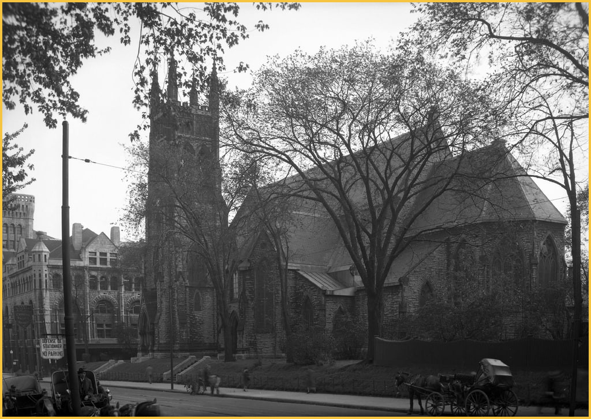

Dossier candidate 102
Independent dossier review required. Not fully verified.

Visual evidence
- The reviewed pixels are classified as image mode ground_street.
Archive metadata report
Rights and attribution
cc-by-4.0-derived; Archives de la Ville de Montréal
Uncertainty
Candidate claims are limited to accepted/adjudicated visual classifications and reported metadata labels.